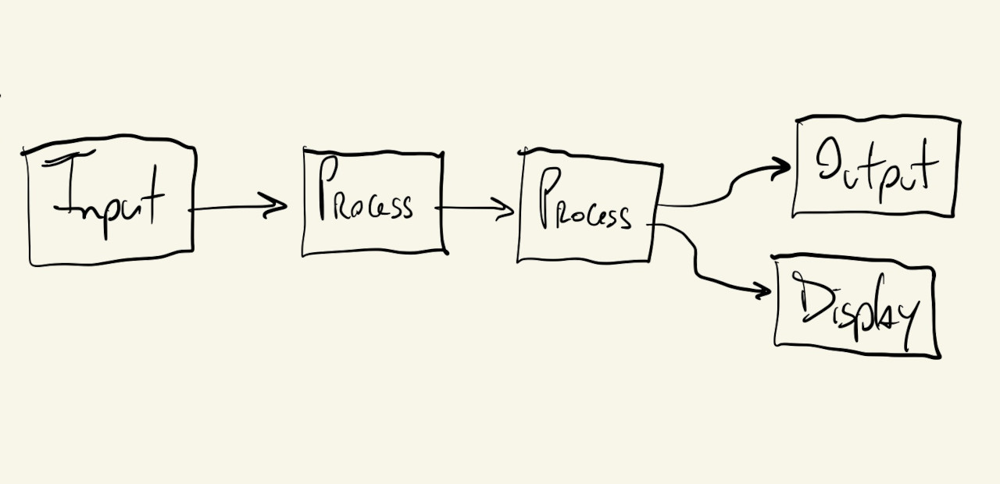
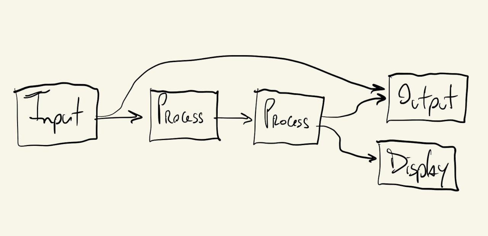
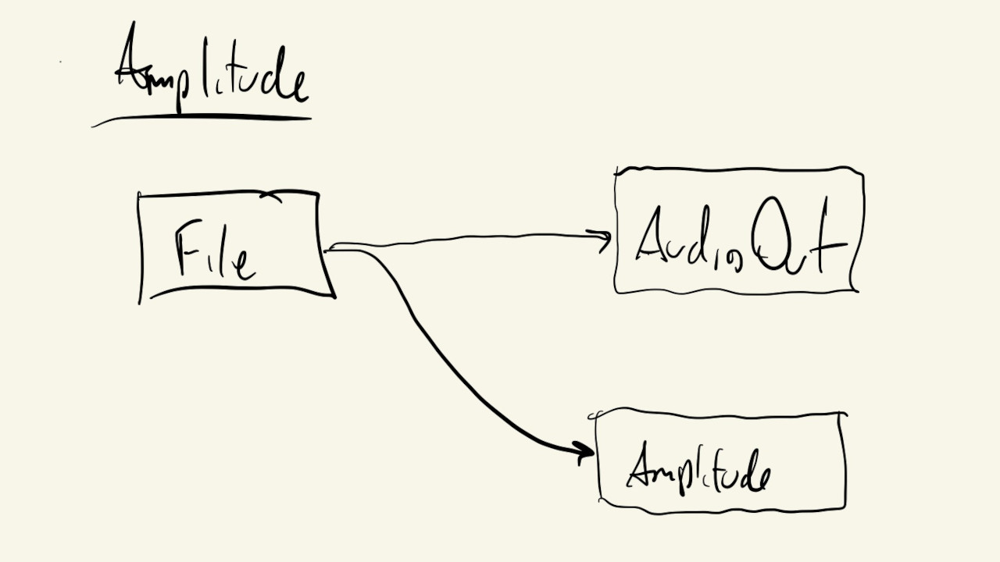
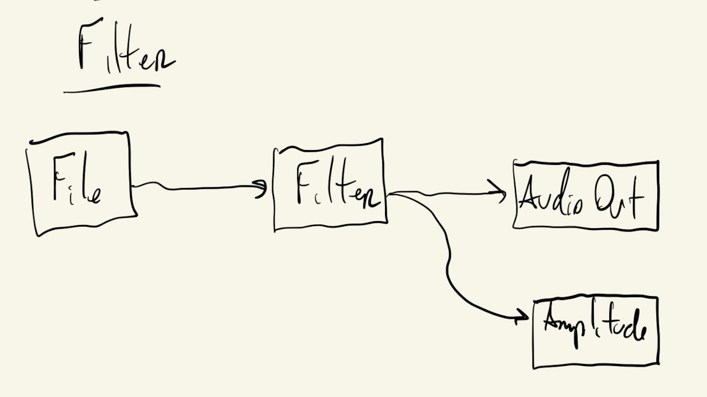
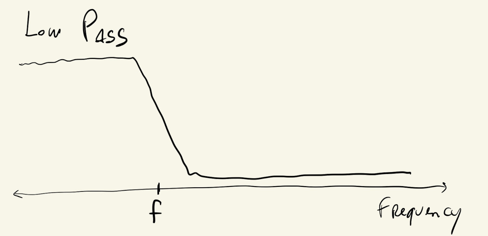
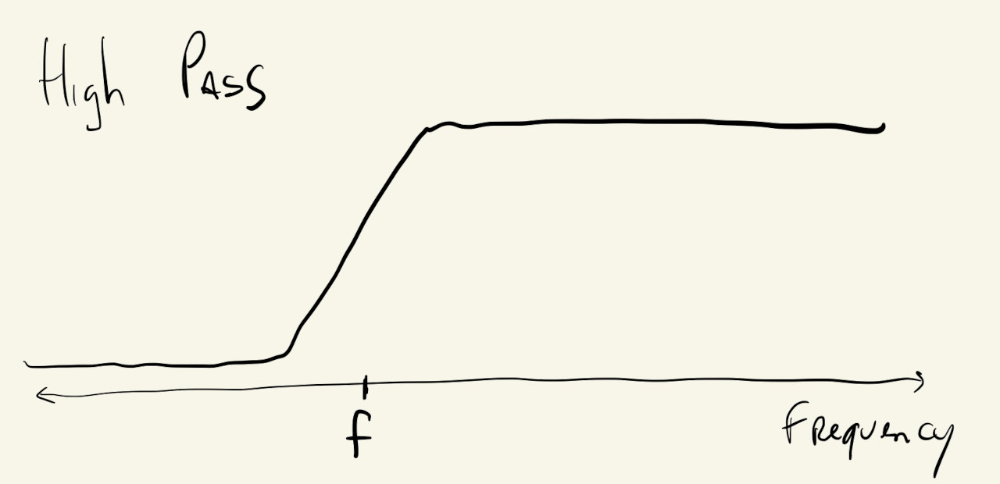
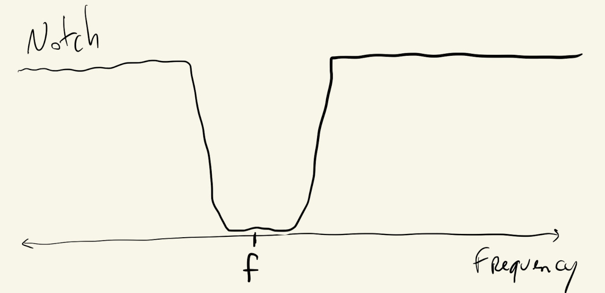
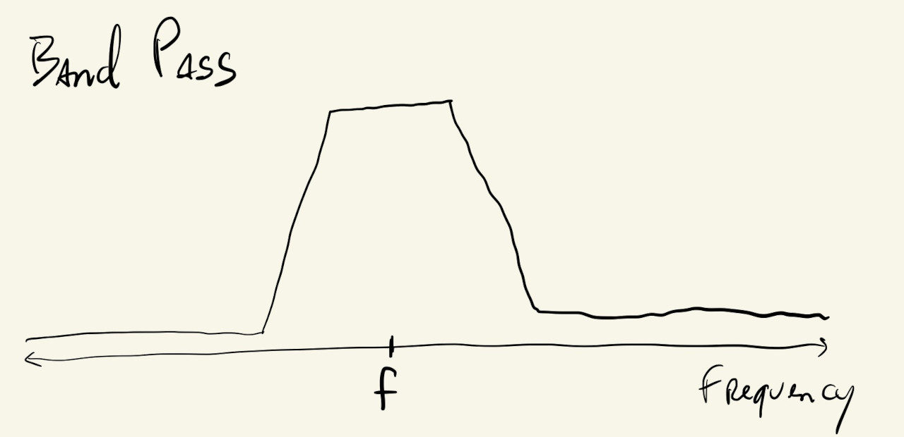
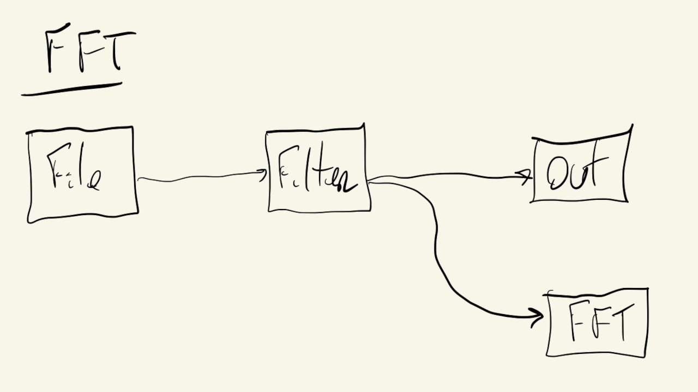

To use the sound library, we have to make sure the p5.sound library is included in our project’s index.html file after the p5.js file. It will look something like this:
<script src="https://cdn.jsdelivr.net/npm/p5@1.7.0/lib/p5.js"></script>
<script src="https://cdn.jsdelivr.net/npm/p5@1.7.0/lib/addons/p5.sound.js"></script>
We’ve already looked at how to use the p5.sound library to play pre-recorded sounds from files, now, let’s look at how to use other parts of the library to further process these files.
The p5.sound library, along with many other creative coding audio processing toolkits, was designed to somewhat mimic a physical audio processing setup. Objects have input and output ports that receive/send the same kind of information (digital audio samples); each module does some kind of processing or manipulation on its inputs before sending them to its outputs; and modules can easily be chained together to create more complex sound effects.
There are special objects that allow us to grab live audio from our computer’s input ports (microphone, line-in), and other objects that allow us to send our processed audio to our computer’s outputs (speakers, line-out).
There are also “display” objects that don’t output any sound signal, but are used to obtain specific information about our audio signals, which we can then use to analyze our audio visually.

The outputs from these objects/modules can be routed to many inputs, and some modules can receive multiple inputs:

Let’s start by looking at one of the simpler modules.
Amplitude. is one of the “display” modules that doesn’t output audio, but instead can be used to show information about our signal.
In this case, the Amplitude module will give us an audio signal’s amplitude (how loud it is), as a number between \(0\) and \(1\):

By default, any p5.SoundFile object we create will send its output to the p5.soundOut module/object, which is our final output: the signal that goes to our speaker.
And, also by default, the Amplitude module gets its input from this same p5.soundOut object.
So, technically, instantiating these two objects like this, would be enough to have them connected properly:
mSound = loadSound("./sound-file.mp3");
mAmp = new p5.Amplitude();
But, it’s not a bad idea to practice how to make these connections ourselves. This will avoid unexpected behavior and unnecessary debugging once our audio processing pipelines start getting more complex.
We can use the following code to manually re-route the signal from our p5.SoundFile object to both the p5.soundOut object and a p5.Amplitude module:
mSound.disconnect();
mSound.connect(p5.soundOut);
mSound.connect(mAmp);
These are the exact connections shown in the diagram above.
Our p5.Amplitude object can now be used at every iteration of our draw() function to get the sound’s amplitude and display it visually using ellipses:
This is similar to how we displayed audio information in the previous section using the getPeaks() function from the SoundFile object directly.
That method works if all we want to do is visualize the information from a single file. If, instead, we want to mix different sound sources first (multiple files, microphone, effects), we’ll have to use an Amplitude object to visualize the resulting sound wave that is being sent to the speakers,
Now that we can visualize our sound, let’s add an actual processing module to manipulate the quality and characteristics of our audio:

The p5.Filter module allows us to filter our audio signals based on frequencies.
Some common types of filter that we can implement with this module are: lowpass, highpass, bandpass and notch.
Like the name suggests, the lowpass filter lets low frequencies (bass) through while blocking high frequencies:

The highpass acts in the opposite manner, filtering out low-frequency components of the sound, while letting high frequencies pass to the output:

The notch filter is used to attenuate a specific range of frequencies from the audio signal, while the bandpass does the opposite and only lets a specific range of frequencies pass to its output:


The frequency \(f\), sometimes called the cutoff frequency, corner frequency or break frequency, is a parameter to the filter object and will determine which frequencies pass and which will be filtered out. The bandpass and notch filters also have another parameter to control their bandwidth, or how wide their cutoff or pass bands are.
With this in mind, we can instantiate a filter and implement the following system:
With something like this:
mSound = loadSound("./sound-file.mp3");
mFilter = new p5.Filter("bandpass");
mAmp = new p5.Amplitude();
mSound.disconnect();
mFilter.disconnect();
mSound.connect(mFilter);
mFilter.connect(p5.soundOut);
mFilter.connect(mAmp);
And use mouseX to pick the filter’s center frequency \(f\):
We can definitely hear the differences in the sound as we move the mouse around and change the filter’s cutoff frequency, but let’s look at a module that will let us visualize the filter’s effect as well.
The p5.FFT class implements the Fast Fourier Transform algorithm, which can be used to separate our audio signal into individual frequency components.
We can replace the Amplitude module in the last example with the FFT module:

And now, when we call FFT.analyze(), this module calculates an array of \(1024\) values, where each value corresponds to how much of a particular audible frequency was present in the original audio signal.
So, the first value of the array corresponds to frequencies between \(0\) and \(20\) Hz, the second value is for frequencies between \(20\) and \(40\) Hz, and so on, all the way to the 1024th value that corresponds to frequencies greater than \(22,000\) Hz or \(22\) kHz.
If the value in a particular position is \(0\), that means the original audio signal had no sound in that frequency. On the other hand, if it’s \(255\), it means that the original signal had a very strong sound with that frequency.
The p5.FFT object also has a getEnergy() function that returns the amount of a specific frequency or frequency range present in the audio signal. It can also be called with one of five pre-defined range strings, to get the amount of energy in the bass, lowMid, mid, highMid and treble frequency ranges.
Knowing this, we can use the p5.FFT object and the FFT.analyze() and getEnergy() functions to visualize the effects of the filter from the previous example:
Instead of just drawing one circle, we now draw five, one for each of the predefined frequency ranges, and as we move the mouse from the left to the right we will see movement go from the bottom circles to the top, which correspond to the higher frequency ranges.